図解：マニエリスム
マニエリスムの展開
- 1520年前後
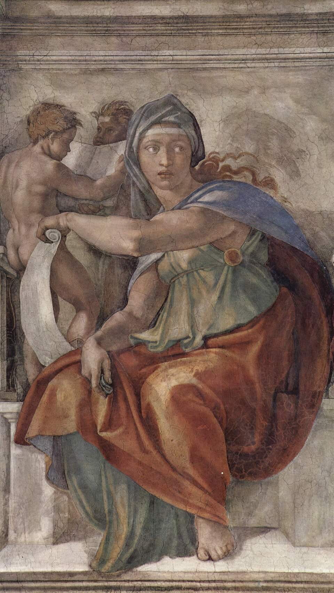
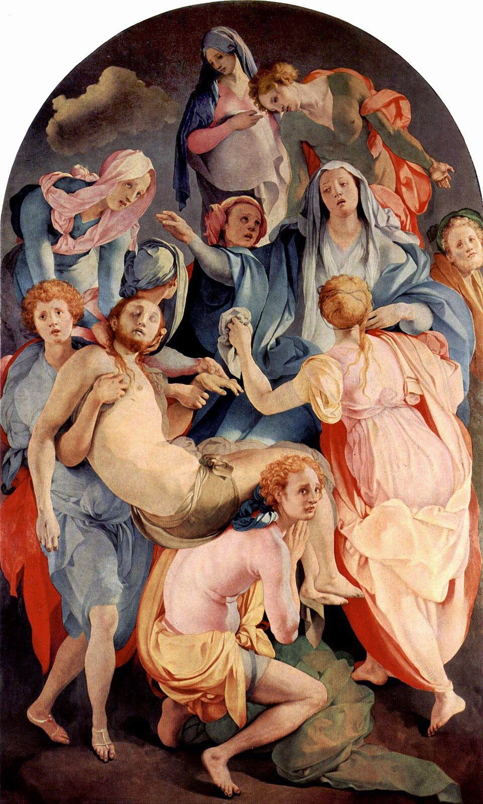
画家が巨匠に学ぶ自然より巨匠の手法
後期ルネサンス - 1527
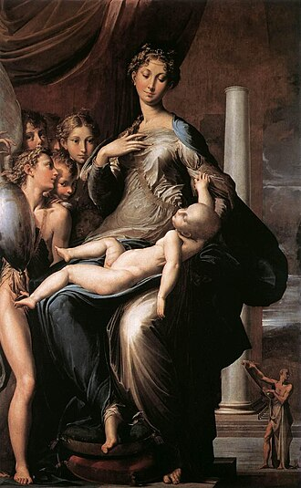
ローマ劫掠芸術家が各地へ散る
様式が広まる - 1531
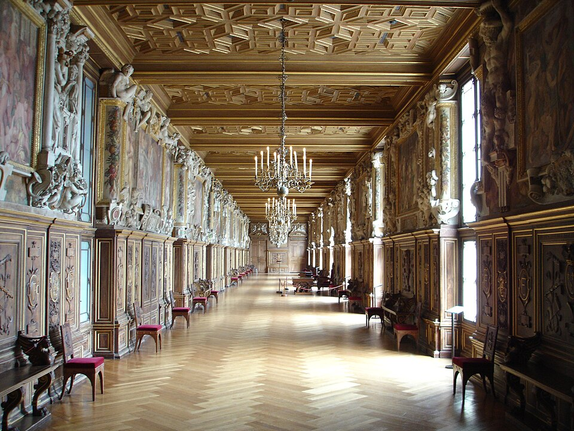
ロッソがフランスへフランソワ1世が招く
フォンテーヌブロー派 - 君主政の時代
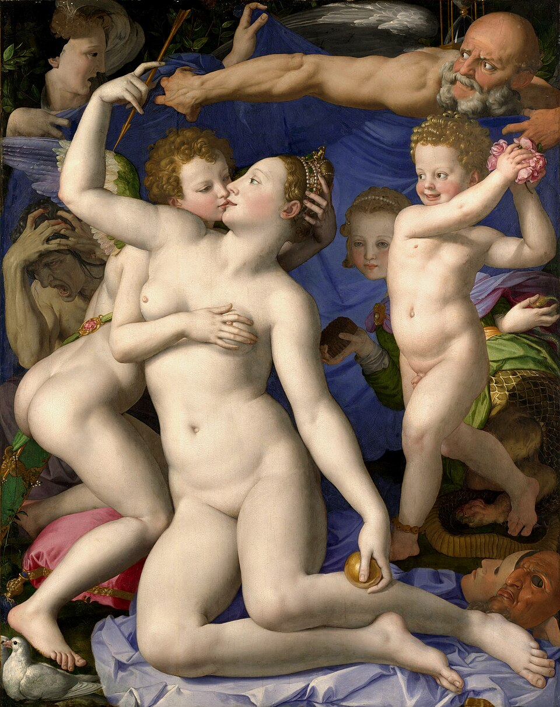
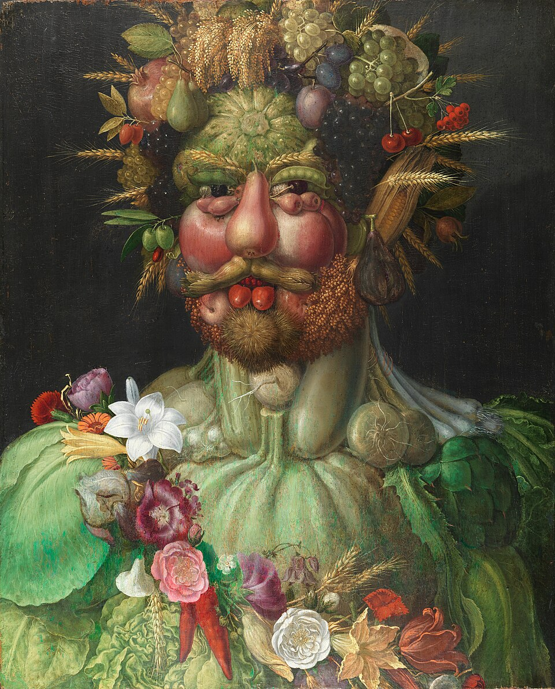
宮廷の寓意の美術教養で謎を読み解く - 16世紀
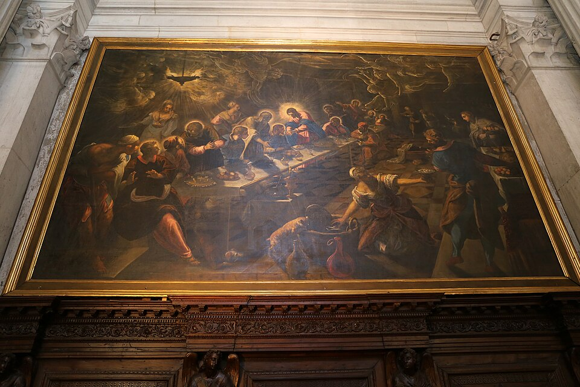
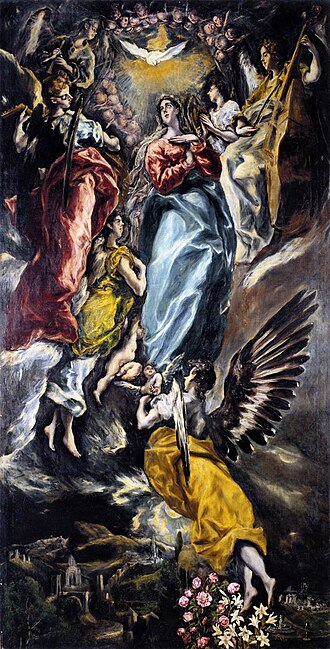
ヴェネツィアで展開ティントレット
エル・グレコ
盛期ルネサンスと何が違うか
図版の出典
- 《システィーナ礼拝堂天井画《デルフォイの巫女》》ミケランジェロ・ブオナローティ：出典（Public domain（PD-Art／Yorck Project））
- 《十字架降下（カッポーニ礼拝堂祭壇画）》ヤコポ・ダ・ポントルモ：出典（Public domain（PD-Art／Yorck Project））
- 《長い首の聖母》パルミジャニーノ：出典（Public domain（PD-Art））
- 《フォンテーヌブロー宮殿・フランソワ1世のギャラリー》ロッソ・フィオレンティーノと協働画家・彫刻家、プリマティッチオほか：出典（CC BY 2.0）
- 《愛の寓意（ウェヌスとキューピッドの寓意）》アーニョロ・ブロンズィーノ：出典（Public domain / PD-Art）
- 《ウェルトゥムヌスとしてのルドルフ2世》ジュゼッペ・アルチンボルド：出典（Public domain（PD-Art／Public Domain Mark 1.0））
- 《最後の晩餐》ティントレット（ヤコポ・ロブスティ）：出典（CC BY 3.0）
- 《無原罪の御宿り（オバーリェ礼拝堂祭壇画）》エル・グレコ：出典（Public domain（PD-Art））
重要人物
手本となった巨匠
マニエリスムの画家
- ポントルモ画家初期マニエリスム。《十字架降下》の現実離れした色
- パルミジャニーノ画家《長い首の聖母》で人体を引き伸ばす。肖像は誇張せず
- ロッソ・フィオレンティーノ画家1531年にフランスへ招かれ、マニエリスムを広める
- ブロンズィーノ画家コジモ1世に仕え、宮廷美術の傑作《愛のアレゴリー》
- ジュゼッペ・アルチンボルド画家ハプスブルク家の宮廷で野菜や果物の肖像を描く
- ジョルジョ・ヴァザーリ画家・美術史家巨匠のマニエラを自然を凌駕する手法と評価
- ティントレット画家ヴェネツィア派の色彩にミケランジェロの素描を加える
- エル・グレコ画家クレタ出身。当時は評価されず、後に再評価
時代と宮廷を動かした人
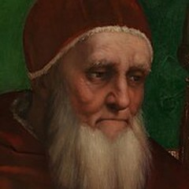
ユリウス2世教皇1506年にサン・ピエトロ大聖堂の改築を命じる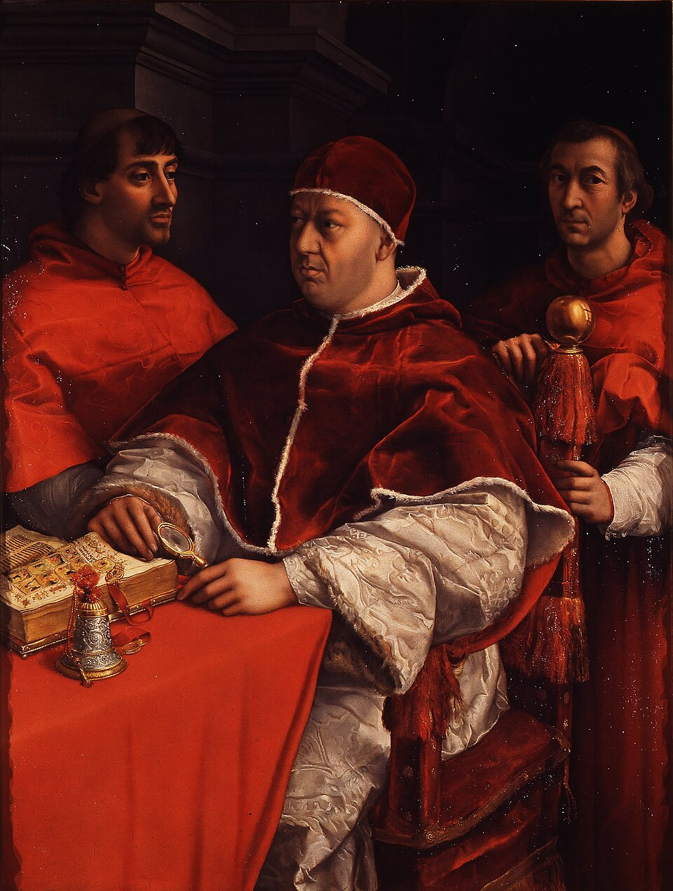
レオ10世教皇浪費で財政難。資金のためドイツで贖宥状を販売 マルティン・ルター宗教改革者贖宥状に異議。「95か条の論題」で宗教改革
マルティン・ルター宗教改革者贖宥状に異議。「95か条の論題」で宗教改革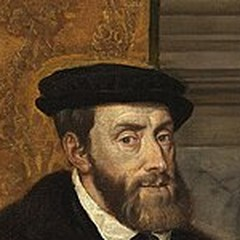
カール5世神聖ローマ皇帝スペイン王も兼ねる。1527年に皇帝軍がローマ劫掠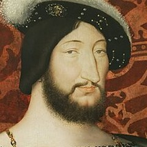
フランソワ1世フランス国王ロッソを招き、フォンテーヌブロー宮殿を改築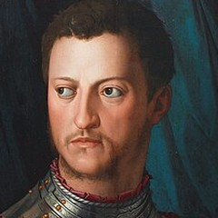
コジモ1世トスカーナ大公ブロンズィーノやヴァザーリが仕えた君主
肖像・図版の出典
- 《ミケランジェロの肖像》ダニエーレ・ダ・ヴォルテッラ（帰属）、1544年頃（部分）：出典（Public domain）
- 《自画像》ティツィアーノ、1560年代、プラド美術館：出典（Public domain）
- 《教皇ユリウス2世の肖像》ラファエロ、1511～1512年、ロンドン・ナショナル・ギャラリー：出典（Public domain）
- 《レオ10世と二人の枢機卿》ラファエロ・サンティ：出典（Public domain（PD-Art））
- 《マルティン・ルターの肖像》ルーカス・クラーナハ（父）、1528年、コーブルク城：出典（Public domain）
- 《椅子に座るカール5世》1548年、アルテ・ピナコテーク（かつてティツィアーノ作とされた）：出典（Public domain）
- 《フランソワ1世の肖像》ジャン・クルーエ、1530年頃、ルーヴル美術館：出典（Public domain）
- 《甲冑姿のコジモ1世》アーニョロ・ブロンズィーノ、1545年頃：出典（Public domain）
マニエリスムとは
自然から巨匠のマニエラへ
動画 1:46～マニエリスムは、1520年前後、レオナルド・ダ・ヴィンチとラファエロ・サンティが相次いで亡くなった後に現れた美術潮流です。盛期ルネサンスに続くため、後期ルネサンスと呼ばれることもあります。フランス語の呼称で、手法や様式を意味するイタリア語「マニエラ」に由来します。
ルネサンス美術は、本来自然を学び、模倣するものでした。そのために透視図法、空気遠近法、スフマートなどが生まれました。しかし、三大巨匠やヴェネツィア派によって自然が完成された形で再現されると、後の画家は、自然そのものよりも巨匠の手法、マニエラから学ぶようになります。
評価の変化とマンネリズム
動画 2:34～当時の芸術家にとって、巨匠のマニエラに学ぶことは誇りでした。この時代に活動した美術家・美術史家ジョルジョ・ヴァザーリも、それを自然を凌駕する手法として評価しました。単なる模倣ではなく、新たな発展として捉えられたのです。
ところが、17世紀以降の美術史家は、ルネサンスの衰退期として否定的に捉えました。マニエリスムは、行動の反復によって新鮮味がなくなる「マンネリズム」の語源にもなりました。20世紀に入ると魅力が再評価され、現在の美術史上の呼称には、単にマンネリという否定的な意味はありません。
大航海時代と混乱のイタリア
交易路の変化と大航海時代
動画 3:23～1453年、ビザンツ帝国が滅び、現在のトルコを中心とするイスラム国家オスマン帝国が支配するようになりました。イタリアへ逃れた東ローマの学者は、古代文献の翻訳を進め、フィレンツェなどのルネサンスに貢献しました。一方、東方の交易路が制限されるという影響もありました。十字軍遠征などで交易の中心となったイタリアにとって、重要な変化です。
制限された交易路を巧みに利用し、海上貿易で発展したのがヴェネツィアといわれます。しかし、スペインやポルトガルは、独占された交易を新航路によって打開しようとしました。大航海時代の始まりです。ヴァスコ・ダ・ガマのインド航路、マゼランの探検隊による世界一周、スペインが支援したイタリア人コロンブスの新大陸への到達が、その代表例です。
新航路が開かれ、香辛料をヴェネツィア経由で取り寄せる必要がなくなると、スペインとポルトガルが力をつけました。この頃のポルトガルには、マヌエル様式という美術があります。ゴシックの伝統を受け継ぎながら、航海や異国に関連する装飾を用い、大航海時代を象徴する表現となりました。

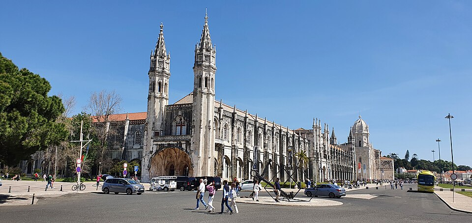
画像を拡大 ＋《ジェロニモス修道院》
- 作者
- ディオゴ・ボイタカ、ジョアン・デ・カスティーリョほか
- 制作時期
- 1501～1502年着工、16世紀を中心に建設（後世の改修を含む）
- 所在地・所蔵
- ベレン地区、リスボン、ポルトガル
- 素材・形式
- 修道院建築
出典・画像について
画像出典：Yair Haklai（撮影）
CC BY-SA 4.0
作品情報：作品・画像・利用条件
戦争のなかのイタリア
動画 5:04～大航海時代のイタリアは、フランスのヴァロワ家と、スペイン・神聖ローマ帝国のハプスブルク家によるイタリア戦争に巻き込まれ、疲弊しました。フランス軍の侵入を許したメディチ家が、フィレンツェから追放された事件もその一つです。
盛期ルネサンスには、ユリウス2世のもとでローマの美術が発展しました。しかし、豪華な教会建築などは、後の宗教改革につながる問題も生みます。経済の中心をスペインやポルトガルに奪われたヴェネツィアと、宗教改革で苦境に立たされたローマ。マニエリスムは、そのような混乱期の美術でした。
サン・ピエトロ改築と宗教改革
動画 5:51～神聖ローマ帝国のマルティン・ルターによる宗教改革は、プロテスタントという新たなキリスト教の教派を生みました。その契機にも、盛期ルネサンスの芸術事業が関わっていました。1506年、ユリウス2世は、カトリックの中心であるサン・ピエトロ大聖堂の改築を命じました。ブラマンテ、ミケランジェロ、ラファエロらが、この事業に参加します。

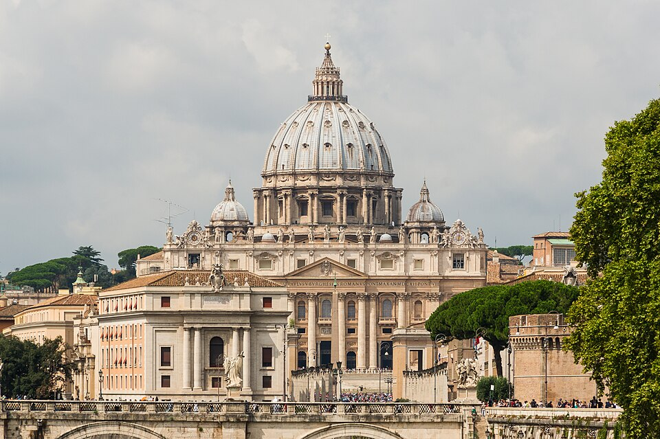
画像を拡大 ＋《サン・ピエトロ大聖堂》
- 作者
- ブラマンテ、ラファエロ、ミケランジェロ、カルロ・マデルノほか
- 制作時期
- 1506～1626年
- 所在地・所蔵
- ヴァチカン
- 素材・形式
- 教会建築
出典・画像について
しかし、1513年にユリウス2世、翌年にブラマンテが亡くなり、改築は難航しました。教皇を継いだレオ10世は、「豪華王」ロレンツォ・デ・メディチの息子です。享楽的な人物で、教皇になっても浪費を続け、教皇庁は財政難に陥りました。大聖堂の建設費も不足し、資金を得るため、ドイツで贖宥状を販売しました。

《レオ10世と二人の枢機卿》
- 作者
- ラファエロ・サンティ
- 制作時期
- 1518年頃
- 所在地・所蔵
- ウフィツィ美術館群所蔵（パラティーナ美術館収蔵番号40）、フィレンツェ
- 素材・形式
- 油彩・板
出典・画像について
画像出典：Raphael
Public domain（PD-Art）
作品情報：作品・画像・利用条件
贖宥状は、すでに赦された罪に伴う罰の免除に関わる証書です。神聖ローマ皇帝は選挙で選ばれ、当時のドイツでは皇帝権が弱く、諸勢力に分かれていました。ローマから財を引き出される「ローマの牝牛」と呼ばれるような状況だったのです。教皇領ではなく、この地で販売が行われた背景には、そのような事情がありました。
用語の補足：贖宥
字幕は現世の罪が許されると説明しますが、カトリックの定義では、すでに赦された罪に伴う有限の罰の免除を意味します。罪そのものの赦しと区別して記述しました。
この資金調達に異議を唱えたのが、マルティン・ルターです。「95か条の論題」は、ヴィッテンベルクの城教会の扉に掲げられ、ドイツ語へ翻訳されて広く伝わりました。ローマに搾取されていた農民もルターを支持し、教皇の立場が脅かされていきます。
ローマ劫掠と芸術家の離散
動画 7:39～1519年、ハプスブルク家のカール5世が神聖ローマ皇帝となりました。スペイン王も兼ねた彼は、ヨーロッパ各地へ大きな影響を及ぼします。1527年には、皇帝軍がローマで激しい殺戮と略奪を行う、ローマ劫掠が起こりました。
教皇クレメンス7世が、イタリア戦争でフランスを支持したことが、その背景にありました。以前のレオ10世までは教皇が皇帝側についていましたが、立場を変えたことで報復を受けたのです。カール5世自身はカトリックでしたが、軍にはルターを支持し、カトリックを憎む兵も多かったとされます。そのことも、被害が悲惨になった要因でした。
宗教改革は、従来の宗教画が偶像崇拝につながるのではないかという疑問を投げかけ、カトリックも向き合う必要が生まれました。ビザンツ帝国のイコノクラスム後に制作が制限されたことを思わせる問題です。また、ローマ劫掠で芸術家が各地へ散ったことで、マニエリスムの様式が広まっていきました。政治や宗教の変化が、美術の展開に直接関わっていたのです。
ミケランジェロと初期マニエリスム
ミケランジェロの影響と蛇状人体
動画 9:21～マニエリスムに大きな影響を与えたのが、三大巨匠のなかで長く生きたミケランジェロです。彼はルネサンスの時代から、自然をさらに誇張するような表現を用いていました。《ピエタ》では見栄えのため、聖母をキリストより大きく作り、システィーナ礼拝堂の天井画では、カンジャンテによる独特の色彩を使っています。
 画像を拡大 ＋
画像を拡大 ＋
《ピエタ》
- 作者
- ミケランジェロ・ブオナローティ
- 制作時期
- 1498～1499年頃
- 所在地・所蔵
- サン・ピエトロ大聖堂、ヴァチカン
- 素材・形式
- 大理石
出典・画像について
サン・ピエトロ大聖堂の原品写真。
画像出典：Stanislav Traykov（撮影） / Tetraktys（既存の切抜き）
CC BY 2.5
作品情報：作品・画像・利用条件
制作メモ
既存教材と同じ正常画像・利用条件を再利用。

《システィーナ礼拝堂天井画《デルフォイの巫女》》
- 作者
- ミケランジェロ・ブオナローティ
- 制作時期
- 1508～1512年（天井画制作期間）
- 所在地・所蔵
- システィーナ礼拝堂、ヴァチカン
- 素材・形式
- フレスコ画
出典・画像について
天井画のうち、色彩の説明で画面に示される《デルフォイの巫女》。資料の図版は修復後の動画画面と色調・状態が異なります。同じフレスコの記録です。
画像出典：Michelangelo
Public domain（PD-Art／Yorck Project）
作品情報：作品・画像・利用条件
初期マニエリスムの画家ポントルモは、この色彩表現の影響を受けました。《十字架降下》の現実離れした色は、カンジャンテやウニオーネを思わせます。人体も引き伸ばされ、うねり、浮遊するように見えます。ここにもミケランジェロの影響があります。

《十字架降下（カッポーニ礼拝堂祭壇画）》
- 作者
- ヤコポ・ダ・ポントルモ
- 制作時期
- 1525～1528年
- 所在地・所蔵
- サンタ・フェリチタ聖堂カッポーニ礼拝堂、フィレンツェ
- 素材・形式
- 油彩（支持体の資料表記に差あり）
出典・画像について
ミケランジェロに影響を与えた古代作品の一つが、ヘレニズム期の《ラオコーン》です。長く地中にあったこの彫刻は1506年に出土し、支援者ユリウス2世が入手しました。曲がりくねる人体表現は、マニエリスムにも通じます。こうした形は、蛇状人体と呼ばれます。
 画像を拡大 ＋
画像を拡大 ＋
《ラオコーンとその息子たち》
- 作者
- ハゲサンドロス、アテノドロス、ポリュドロス
- 制作時期
- 前40～30年頃（ヴァチカン美術館の現行説明、年代に諸説）
- 所在地・所蔵
- ヴァチカン美術館、ピオ＝クレメンティーノ美術館
- 素材・形式
- 大理石
出典・画像について
パルミジャニーノの長い首と肖像画
動画 10:43～パルミジャニーノの《長い首の聖母》では、首だけでなく、抱かれるキリストの体も長く引き伸ばされています。自然なプロポーションを大きく変える、マニエリスムらしい表現です。しかし、正確な人体を描けなかったという意味ではありません。肖像画には、そのような誇張は見られません。

《長い首の聖母》
- 作者
- パルミジャニーノ
- 制作時期
- 1534～1540年
- 所在地・所蔵
- ウフィツィ美術館、フィレンツェ
- 素材・形式
- 油彩・板
出典・画像について
肖像画に描かれた人物は、パルマに領地を持つロッシ家のピエル・マリア・ロッシとされます。ローマで活動していたパルミジャニーノは、ローマ劫掠の影響もあり、その宮廷で働いたようです。パルマは出生地でもあり、故郷へ戻ったという見方もできます。逃れた先のボローニャなどで様式を広めたことも、その功績でした。もし略奪がなければ、異なる芸術家人生だったかもしれません。

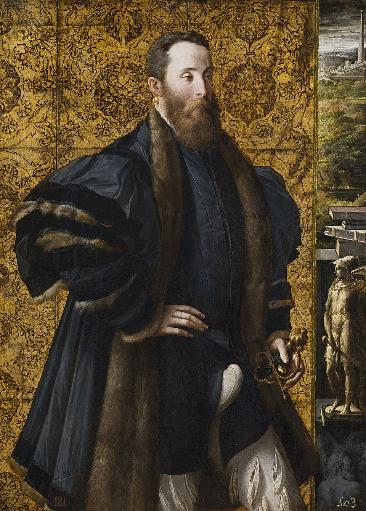
画像を拡大 ＋《サン・セコンド伯ピエル・マリア・ロッシの肖像》
- 作者
- パルミジャニーノ
- 制作時期
- 1535～1538年
- 所在地・所蔵
- プラド美術館、マドリード
- 素材・形式
- 油彩・板
出典・画像について
フランスとフォンテーヌブロー派
フランスへ渡ったロッソ
動画 11:38～マニエリスムは、イタリア国外へも伝わりました。フランスへの普及に大きく貢献したのが、ロッソ・フィオレンティーノです。ポントルモと同じ工房で働いた彼は、1531年、フランス国王に招かれ、その地で活動しました。
招いたのは、晩年のレオナルドも保護したフランソワ1世です。当時のフランスは、軍事力でイタリアを上回っても、芸術では及ばないと考えられていました。国王はレオナルドとの交流もあり、イタリア美術に強い憧れを抱きます。古代ローマがギリシア文化に憧れた関係にも似ています。
人物情報の補足：レオナルドのフランス滞在
字幕は晩年のフランス滞在を5年とし、制作しなかったと述べます。教材015で確認済みのルーヴル作品台帳では、渡仏は1516年、死去は1519年です。期間と無制作の断定は採用せず、フランソワ1世による保護と芸術への憧れを残しました。
確認資料：ルーヴル作品台帳《モナ・リザ》
ロッソの作風は、ローマを訪れる前後で変わりました。1524年頃にローマへ赴き、巨匠たちからマニエラを学ぶと、体を引き伸ばすだけでなく、筋肉を強調する表現を用いるようになります。ミケランジェロの影響が強く表れた変化です。彼は1540年に原因不明の死を遂げるまで、マニエリスムの様式を貫きました。

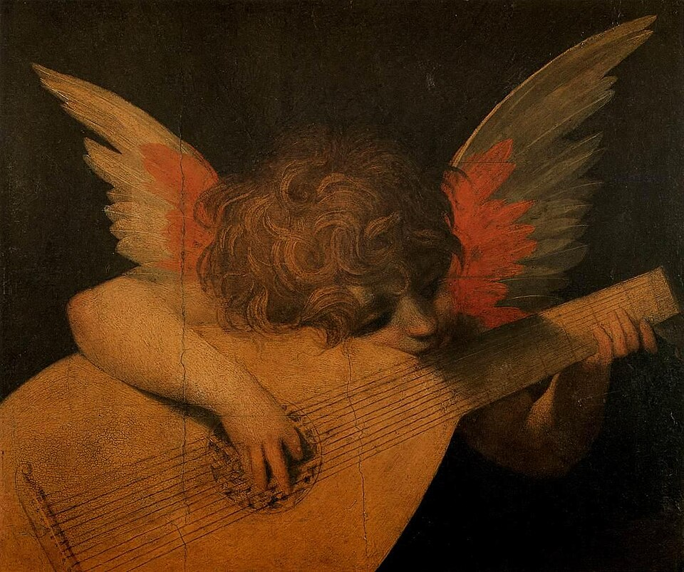
画像を拡大 ＋《リュートを弾く天使》
- 作者
- ロッソ・フィオレンティーノ
- 制作時期
- 1521年
- 所在地・所蔵
- ウフィツィ美術館、フィレンツェ
- 素材・形式
- 油彩・板（断片）
出典・画像について

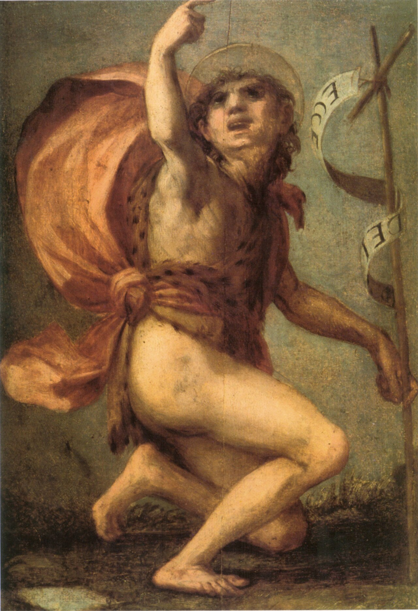
画像を拡大 ＋《幼い洗礼者ヨハネ》
- 作者
- ロッソ・フィオレンティーノ
- 制作時期
- 1521年頃
- 所在地・所蔵
- ウフィツィ美術館、フィレンツェ（旧カルロ・デル・ブラーヴォ・コレクション）
- 素材・形式
- 油彩・板
出典・画像について
Commonsのファイル名は旧所蔵表記「フィレンツェ個人蔵」。
画像出典：Rosso Fiorentino / Wikimedia Commons
Public domain
作品情報：画像出典・利用条件 · 現所蔵：2020年寄贈
制作メモ
動画752秒の比較図右と同じ図柄（腕を上げる幼い洗礼者ヨハネ、十字杖と銘帯）。

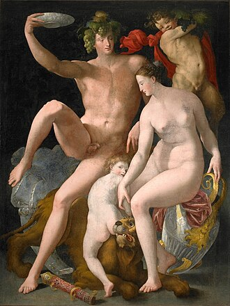
画像を拡大 ＋《バッカス、ウェヌス、キューピッド》
- 作者
- ロッソ・フィオレンティーノに帰属
- 制作時期
- 1535～1539年頃（公式展覧会資料。Commonsは1530年代）
- 所在地・所蔵
- ルクセンブルク国立考古・歴史・美術館（MNAHA）
- 素材・形式
- 油彩・カンヴァス
出典・画像について
作者への帰属には留保があり、動画表示1531～1532年と確認資料1535～1539年頃に差があります。
画像出典：Rosso Fiorentino
Public domain / PD-Art
作品情報：作品・画像・利用条件
制作メモ
配信画像は低解像度です。
人物情報の補足：仕えた国王
字幕にはアンリ2世にも仕えたとありますが、ロッソは1540年に没しており、1547年の同王即位より前です。フランソワ1世に仕えた活動として記述しました。
フォンテーヌブロー派
動画 12:59～フランソワ1世が進めていた大規模な事業が、フォンテーヌブロー宮殿の改築でした。国王は強大なハプスブルク家へ対抗し、フランスを中央集権的な国家に変えようとします。神聖ローマ皇帝への立候補でカール5世に敗れたことも、その対抗意識に関わりました。宮殿は、国王の強い権力の象徴となります。

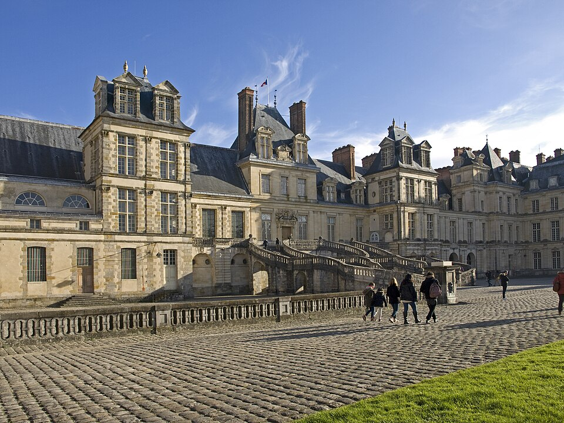
画像を拡大 ＋《フォンテーヌブロー宮殿・馬蹄形階段のある正面》
- 作者
- 複数の建築家。階段はジャン・アンドルーエ・デュ・セルソーらが改築
- 制作時期
- 12～19世紀に増改築。現馬蹄形階段は1632～1634年
- 所在地・所蔵
- フォンテーヌブロー、フランス
- 素材・形式
- 宮殿建築
出典・画像について
ロッソらマニエリスムの画家によって、フランソワ1世のギャラリーが装飾されました。彼ら自身や、その表現を学んで宮殿の装飾に携わった人々は、フォンテーヌブロー派と呼ばれるようになります。

《フォンテーヌブロー宮殿・フランソワ1世のギャラリー》
- 作者
- ロッソ・フィオレンティーノと協働画家・彫刻家、プリマティッチオほか
- 制作時期
- 建築1528～1530年、主な装飾1535～1539年（後代修復を含む）
- 所在地・所蔵
- フォンテーヌブロー宮殿、フランス
- 素材・形式
- 壁画・漆喰装飾・木工
出典・画像について
宮廷のマニエリスム
宮廷美術と《愛のアレゴリー》
動画 13:52～フィレンツェでは共和政の崩壊後、メディチ派と反メディチ派が権力を争いました。最終的に教皇がコジモ1世に大公の称号を与え、トスカーナ大公国となりました。カール5世やフランソワ1世も含め、強力な君主が国を統治する方向へ進んでいました。こうした君主の庇護を受け、マニエリスムには宮廷的な性格が強まります。
その代表作が、コジモ1世に仕えたブロンズィーノの《愛のアレゴリー》です。アレゴリー、寓意とは、人物や物を使って、目に見えない事柄をほのめかす表現です。この作品は、コジモ1世からフランソワ1世へ贈られたといわれ、宮廷美術の傑作に挙げられます。

《愛の寓意（ウェヌスとキューピッドの寓意）》
- 作者
- アーニョロ・ブロンズィーノ
- 制作時期
- 1540～1545年頃
- 所在地・所蔵
- ナショナル・ギャラリー、ロンドン
- 素材・形式
- 油彩・板
出典・画像について
画像出典：Bronzino
Public domain / PD-Art
作品情報：作品・画像・利用条件
主題を直接示すのではなく、知識がなければ分からないように描き、宮廷人が教養を用いて意味を読み解くことを求めました。問いを解くような鑑賞が、宮廷人の好みに合ったのです。知識や理解力を誇示する目的もあったのかもしれません。
謎を残す寓意とアルチンボルド
動画 15:16～寓意を謎として描く傾向は、フォンテーヌブロー派にも引き継がれました。《ガブリエル・デストレとその妹》は作者不詳で、込められた寓意にも謎が残る作品です。冷やかな表情や、乳首をつまむ動作は、容易には意味を理解できません。フランドルからも芸術家が集まったこの派では、官能性と寓意が融合し、対抗宗教改革の影響を強く受ける地域とは異なる展開を見せました。

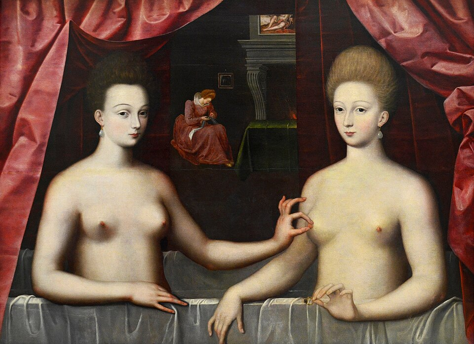
画像を拡大 ＋《ガブリエル・デストレとその姉妹と推定される肖像》
- 作者
- 作者不詳（フォンテーヌブロー派）
- 制作時期
- 1594年頃
- 所在地・所蔵
- ルーヴル美術館、パリ
- 素材・形式
- 油彩・板
出典・画像について
ハプスブルク家の宮廷では、ミラノ出身のジュゼッペ・アルチンボルドが活躍しました。《ウェルトゥムヌスとしての皇帝ルドルフ2世像》は、皇帝をローマ神話の豊穣神になぞらえた作品です。ズッキーニやカボチャなど、新大陸から伝わったものも含め、野菜や果物を組み合わせて顔と体を表しています。

《ウェルトゥムヌスとしてのルドルフ2世》
- 作者
- ジュゼッペ・アルチンボルド
- 制作時期
- 1591年
- 所在地・所蔵
- スコークロステル城（スウェーデン）
- 素材・形式
- 油彩・板
出典・画像について
大航海時代に新大陸の品々が入ってきたことも、この表現に関わります。一般の人には見慣れない植物を見分けることが、宮廷人の知識を示す機会にもなりました。ハプスブルク家には、珍品を集める部屋、ヴンダーカンマーがありました。アルチンボルドは、それらを詳しく観察して制作に生かします。人体の引き伸ばしとは違っても、知識人が解読する宮廷的な要素が、マニエリスムらしいところです。奇抜な作品は、現在でも人気があります。
人物情報の補足：ルドルフ2世
字幕はルドルフ2世のスペイン統治に言及しますが、所蔵館はプラハの神聖ローマ皇帝として紹介しています。ハプスブルク家の交易・珍品収集の説明と、皇帝個人の統治領域を混同しない文章にしました。
確認資料：スコークロステル城《ウェルトゥムヌス》
メディチ家のヴァザーリとジャンボローニャ
動画 16:53～共和政から君主政へ移ったフィレンツェでは、メディチ家のもとで、ジョルジョ・ヴァザーリとジャンボローニャが活躍しました。ヴァザーリはミケランジェロに学び、コジモ1世に仕えた芸術家で、美術史家としても知られます。筋肉を強調した表現に、その影響が見られます。建築でも才能を発揮し、後のウフィツィ美術館となる建物を設計しました。

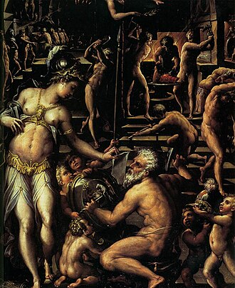
画像を拡大 ＋《ウルカヌスの鍛冶場》
- 作者
- ジョルジョ・ヴァザーリ
- 制作時期
- 1564年頃
- 所在地・所蔵
- ウフィツィ美術館（フィレンツェ）
- 素材・形式
- 油彩・銅板
出典・画像について

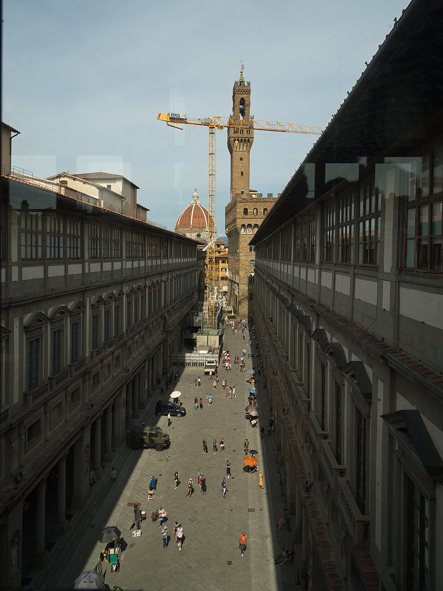
画像を拡大 ＋《ウフィツィ美術館の建築（中庭）》
- 作者
- ジョルジョ・ヴァザーリ（設計）
- 制作時期
- 1560～1580年
- 所在地・所蔵
- フィレンツェ、イタリア
- 素材・形式
- 建築
出典・画像について
ヴァザーリが設計した建物の現在の姿。後代の美術館展示を16世紀当初の状態とは区別します。動画の展示廊下とは別視点の、現在の中庭の補助写真です。
画像出典：Armin Kleiner（撮影）
CC BY-SA 4.0
作品情報：作品・画像・利用条件
ジャンボローニャは、メディチ家の宮廷彫刻家として、マニエリスムの表現をさらに誇張しました。人体の引き伸ばしにとどまらず、三人の人物が複雑に絡み合っています。どの方向から見ても三人が螺旋状に見えるという、挑戦的な造形です。各地の宮廷で、芸術家はそれぞれの発展を遂げました。

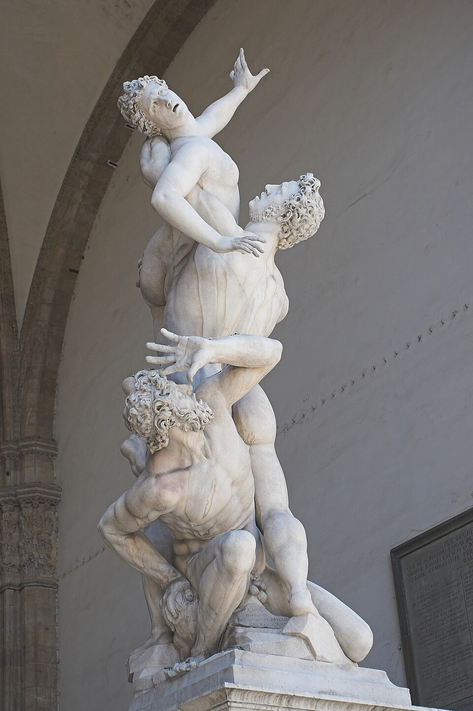
画像を拡大 ＋《サビニの女の略奪》
- 作者
- ジャンボローニャ
- 制作時期
- 1579～1583年
- 所在地・所蔵
- ロッジャ・デイ・ランツィ（フィレンツェ）
- 素材・形式
- 大理石
出典・画像について
ヴェネツィアとエル・グレコ
ヴェネツィア派とヴェロネーゼ
動画 17:44～多くの国が中央集権へ進むなか、ヴェネツィアは共和政を維持しました。経済の中心をスペインなどに奪われ、オスマン帝国から攻撃を受けることも多い、厳しい時期でした。それでも美術を率いたのが、ミケランジェロと同様に長く生きたティツィアーノです。
独特の色彩と、感覚に任せたヴェネツィア派のタッチが、その特徴でした。後の画家は、ミケランジェロに学ぶのと同じように、ティツィアーノのマニエラを模倣しました。
ティツィアーノから学んだ代表的な画家が、ヴェロネーゼです。《カナの婚礼》では、盛期ルネサンスの均整の取れた人物配置より、劇的な効果を重視して、人物を入り交じらせています。人体の引き伸ばしとは異なりますが、こうした激しさもマニエリスムに通じます。美しい青には、貴重なラピスラズリを豊富に使ったとされ、色彩を重視するヴェネツィア派らしさが表れています。

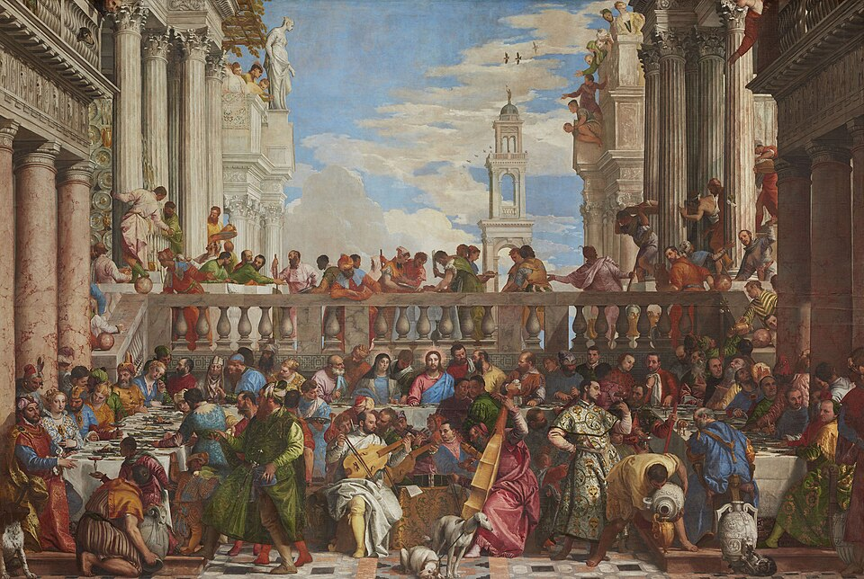
画像を拡大 ＋《カナの婚礼》
- 作者
- パオロ・ヴェロネーゼ
- 制作時期
- 1562～1563年
- 所在地・所蔵
- ルーヴル美術館（パリ）
- 素材・形式
- 油彩・カンヴァス
出典・画像について
ティントレットの《最後の晩餐》
動画 19:00～ミケランジェロとティツィアーノの両方の要素を取り入れたのが、ティントレットやエル・グレコです。ティントレットは、ヴェネツィア派の色彩に加え、ミケランジェロの素描の要素を取り入れました。その代表作が《最後の晩餐》です。
レオナルドの《最後の晩餐》は、キリストを中心に人物を対称的に配置し、整理された画面を作りました。盛期ルネサンスまでによく見られた構成です。これに対し、ティントレットは非対称の構図と、衣服の鮮やかな色彩を用いています。色彩はヴェネツィア派らしい特徴ですが、同派の画家には珍しく素描も重視し、筋肉を強調する描写にはミケランジェロの影響が見られます。

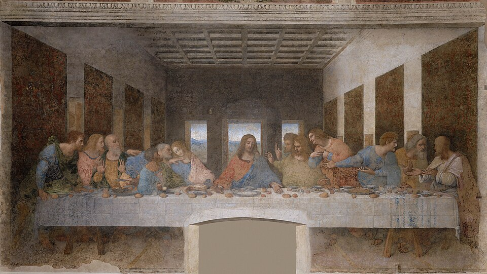
画像を拡大 ＋《最後の晩餐》
- 作者
- レオナルド・ダ・ヴィンチ
- 制作時期
- 1495～1498年
- 所在地・所蔵
- サンタ・マリア・デッレ・グラツィエ修道院食堂（ミラノ）
- 素材・形式
- 壁画（乾いた壁面への混合技法）
出典・画像について

《最後の晩餐》
- 作者
- ティントレット（ヤコポ・ロブスティ）
- 制作時期
- 1592～1594年
- 所在地・所蔵
- サン・ジョルジョ・マッジョーレ聖堂（ヴェネツィア）
- 素材・形式
- 油彩・カンヴァス
出典・画像について
画像出典：Sailko（撮影）
CC BY 3.0
作品情報：作品・画像・利用条件
画面全体を暗くし、光を強く際立たせるキアロスクーロも特徴です。ルネサンスから進み、次のバロック美術を予感させる表現となっています。
ヴェネツィアに学んだエル・グレコ
動画 20:10～ヴェネツィアに学び、独自の美術へと昇華させたのが、エル・グレコです。その名は「ギリシア人」という愛称でした。当時は十分に評価されませんでしたが、後に重要なマニエリスムの画家と認められます。代表作の一つが《無原罪のお宿り》です。この主題は、聖母マリアが、その存在の始めから原罪を免れていたという教義を表します。

《無原罪の御宿り（オバーリェ礼拝堂祭壇画）》
- 作者
- エル・グレコ
- 制作時期
- 1608～1613年
- 所在地・所蔵
- サンタ・クルス美術館（トレド）
- 素材・形式
- 油彩・カンヴァス
出典・画像について
《無原罪のお宿り》には、荒々しい筆触も見られます。当時ヴェネツィアの支配下にあったクレタ島出身のエル・グレコは、ヴェネツィアへ渡ってマニエリスムの様式を学びました。色彩はティツィアーノから、引き伸ばされた人体はティントレットから学んだといわれます。一方で、クレタに伝わるビザンティンの伝統も失いませんでした。強く残された輪郭線などに、その影響が見られます。
その後に移ったスペインでは、独特の作風が必ずしも評価されませんでした。他にない奇抜さに加え、17世紀には貴族的なマニエリスムが衰え、カトリックが宗教改革に対して示す宗教画の方針にも、作風が適合しにくかったためです。しかし、後に表現主義が現れると再評価され、マニエリスムを代表する画家となりました。
バロックへ
対抗宗教改革からバロックへ
動画 21:43～マニエリスムが展開した16世紀には、対抗宗教改革も起こりました。その後の17世紀には、カトリックとプロテスタントの信徒獲得を背景として、バロック美術が展開していくことになります。
要点まとめ
- マニエリスムは1520年前後、レオナルドとラファエロの死後に現れた美術潮流。手法・様式を意味するイタリア語「マニエラ」に由来し、画家は自然よりも巨匠の手法から学んだ。17世紀以降は否定的に捉えられ「マンネリズム」の語源にもなったが、20世紀に再評価された。
- 1453年のビザンツ帝国滅亡で東方の交易路が制限され、スペインとポルトガルは新航路を開いた（大航海時代）。ポルトガルでは航海に関わる装飾を用いるマヌエル様式が生まれた。イタリアはイタリア戦争で疲弊した。
- サン・ピエトロ大聖堂の改築資金のため、レオ10世はドイツで贖宥状を販売した。これに異議を唱えたルターの「95か条の論題」から宗教改革が起こった。1527年には皇帝カール5世の軍がローマ劫掠を行い、散った芸術家がマニエリスムを広めた。
- ミケランジェロの誇張表現とカンジャンテがマニエリスムに大きな影響を与えた。初期のポントルモは《十字架降下》で現実離れした色と引き伸ばされた人体を描いた。1506年に出土した《ラオコーン》の曲がりくねる人体は「蛇状人体」と呼ばれる。
- パルミジャニーノの《長い首の聖母》は、自然なプロポーションを大きく変えたマニエリスムらしい作品。ロッソ・フィオレンティーノはフランソワ1世に招かれ、フォンテーヌブロー宮殿の装飾に携わった画家たちはフォンテーヌブロー派と呼ばれる。
- 強力な君主の庇護のもとで、マニエリスムは宮廷的な性格を強めた。コジモ1世に仕えたブロンズィーノの《愛のアレゴリー》のように、寓意を教養で読み解く作品が好まれた。フォンテーヌブロー派の《ガブリエル・デストレとその妹》にも謎が残る。
- ハプスブルク家の宮廷ではアルチンボルドが、野菜や果物で顔と体を表した《ウェルトゥムヌスとしての皇帝ルドルフ2世像》を描いた。フィレンツェではヴァザーリ（ウフィツィ美術館となる建物を設計）と、螺旋状に絡み合う彫刻のジャンボローニャが活躍した。
- ヴェネツィアではティツィアーノのマニエラが模倣された。ヴェロネーゼの《カナの婚礼》、ヴェネツィア派の色彩にミケランジェロの素描を取り入れたティントレットの《最後の晩餐》（非対称の構図とキアロスクーロ）がある。
- クレタ島出身のエル・グレコは、ティツィアーノの色彩とティントレットの人体を学び、ビザンティンの伝統も保った。《無原罪のお宿り》が代表作の一つで、表現主義の登場後に再評価された。17世紀には対抗宗教改革を背景にバロックが展開する。
確認問題
答えを考えてから開いてください。選択問題は選ぶとすぐ正誤と解説が出ます（選択肢の順番は開くたびに変わります）。各問題のリンクから該当の章や作品カードへ戻れます。
選択問題：0／5問回答・正解0
A. 一問一答答えを考えてから開く
問1「マニエリスム」の語源で、手法や様式を意味するイタリア語は何か。
答えを見る
問21506年に出土した《ラオコーン》などに見られ、マニエリスムにも通じる曲がりくねる人体表現を何と呼ぶか。
答えを見る
問3ハプスブルク家にあった、珍品を集める部屋を何と呼ぶか。
答えを見る
B. 4択選ぶとすぐ正誤と解説
問4首だけでなく、抱かれるキリストの体も長く引き伸ばした《長い首の聖母》の作者は誰か。
→ 本文で確認（パルミジャニーノの長い首と肖像画）
問51531年にフランス国王フランソワ1世に招かれ、マニエリスムのフランスへの普及に大きく貢献した画家は誰か。
→ 本文で確認（フランスへ渡ったロッソ）
問6エル・グレコの出身地で、作品の強い輪郭線などにビザンティンの伝統を残す背景となった場所はどこか。
→ 本文で確認（ヴェネツィアに学んだエル・グレコ）
C. 図版問題画像を見て答える
問7この作品の作者と、描かれた人物を答えよ。
答えを見る
問8この作品の作者は誰か。
→ 作品カードで確認
問9この彫刻の作者は誰か。
→ 作品カードで確認